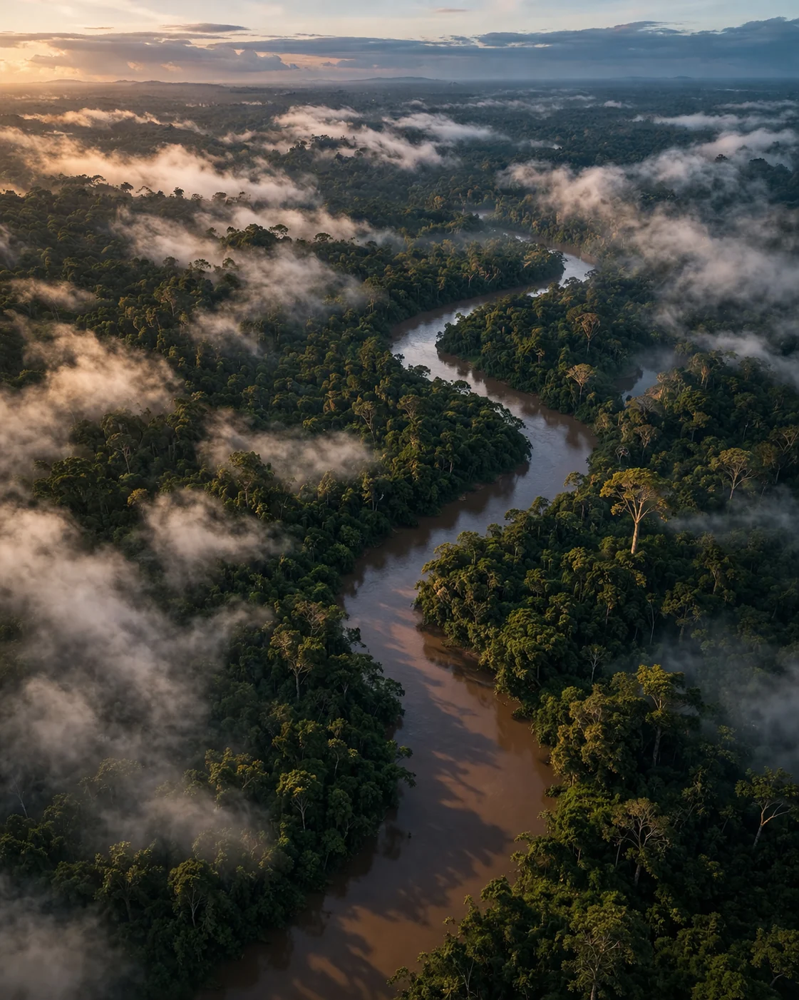

Stand where the plants begin
Read altitude, weather, and habitat as part of the plant story.
 KAWSAYPACANCESTRAL HERBS
KAWSAYPACANCESTRAL HERBSGather in Ecuador
Small-group retreats, plant walks, and practical workshops designed to turn herbal curiosity into relationship, context, and a ritual you can carry home.
Why gather in person
Every experience moves slowly enough to notice what a product page cannot show: habitat, preparation, relationship, and the people who hold the knowledge.
Read altitude, weather, and habitat as part of the plant story.

Work with aroma, texture, water, time, and clear repeatable methods.

Understand why stewardship and fair partnership matter to every pouch.
Upcoming experiences
These preview programs open by interest list. Confirmed hosts, dates, pricing, and accessibility details are shared before registration.

Season 01A five-night immersion in habitat, community context, preparation, and quiet integration. Designed for people who want depth without spectacle.
 Quarterly
QuarterlyA guided half-day introduction to reading habitat, observing responsibly, and understanding why harvest timing and restraint matter.
 Monthly
MonthlyA live, approachable workshop on label reading, infusion versus decoction, measuring, steeping, and building a routine that lasts.
A considered journey
Tell us which experience, season, and pace feel right. No deposit is taken at this stage.
We share confirmed dates, hosts, physical demands, accessibility notes, inclusions, and exclusions.
Accepted guests receive a practical packing, health, travel, and cultural preparation guide.
The experience closes with a simple personal ritual and resources for continued learning.
Before you travel
Not on this design preview. The interest list lets Kawsaypac confirm demand and share a complete host-approved itinerary before registration opens.
No. Experiences are designed for curious beginners and experienced practitioners alike. The focus is careful observation and practical learning, not performance.
Each confirmed program includes clear information about elevation, walking distance, terrain, accommodation, and medical considerations so you can make an informed decision.
Kawsaypac's standard is direct partnership, fair compensation, small groups, consent around photography, and no extraction of restricted cultural knowledge.
Yes. Travel documents, insurance, flights, and entry requirements remain the guest's responsibility. The full brief will state arrival windows and meeting points.
Begin with a conversation
Join the event interest list and receive the first confirmed itinerary before public registration opens.